광야에서 예루살렘 성문까지, 그림 여섯 점으로 걷는 사순절. 사순절의 여섯 주일, 그림 한 점에 질문 하나. 배고픈 광야의 40일에서 호산나를 외치는 길까지.
1 그림을 함께 보고2 질문을 던지고3 그 시절로 가 본 뒤4 본문을 같이 읽어요
그림 아래 아이에게 보여 주기를 누르면 그림과 그 땅의 옛 사진을 화면 가득 띄우고, 질문을 하나씩 넘길 수 있어요. 흑백 사진은 누르면 AI로 색을 입힌 가상 복원으로 바뀌어요.
검수 전 초안이에요. AI가 출처를 모아 쓴 글이라, 카드마다 맨 아래 ‘근거 보기’와 대조해 확인해 주세요.
여섯 장면을 잇는 두 말: “돌아가다”(눅 15:20)와 “찾다”(눅 19:10). 집을 떠난 아들은 아버지께로 돌아가고, 예수님은 제자들이 막아선 아이들과 나무 위의 삭개오, 무덤 속의 나사로를 찾아 부르셨어요. 광야에서 시작한 그 길은 종려나무 가지가 흔들리는 예루살렘 성문에 닿아요.
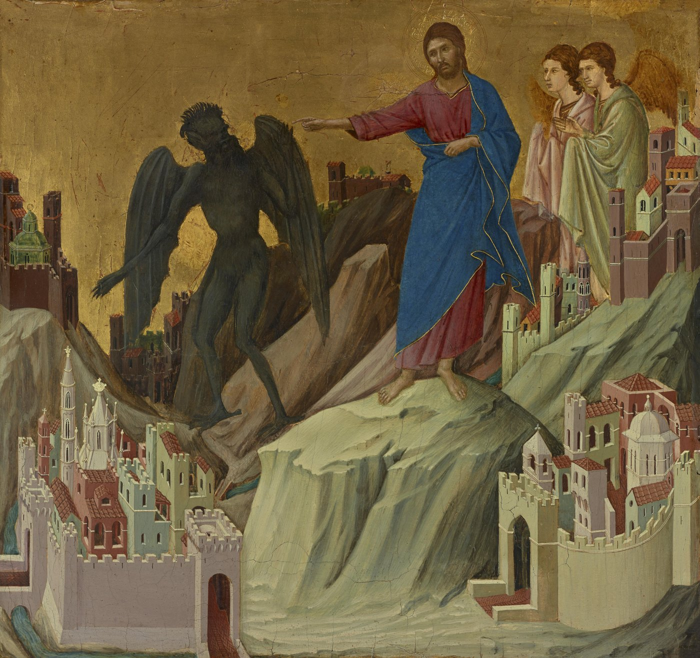
「산 위의 시험」 두초 디 부오닌세냐, 1308~1311년 미국 뉴욕, 프릭 컬렉션
사순절 첫째 주일 · 광야의 시험2월 14일 사순절 첫째 주일 · 마태복음 4:1~11
이 그림이 여는 질문
예수님도 시험을 보셨어요?
높은 산꼭대기, 발아래에는 장난감처럼 작은 성들이 펼쳐져 있습니다. 예수님은 손을 뻗어 말씀하십니다. “사탄아 물러가라.”
그림 속에서 찾아보기
예수님 앞에 선 검은 형체를 찾아보세요. 등에 달린 날개는 어떤 동물을 닮았나요?
산 아래 작은 성들을 세어 보세요. 탑과 지붕은 무슨 색인가요?
예수님 뒤에 선 두 천사를 찾아보세요. 이 천사들은 무엇을 하러 왔을까요?
이야기
세례를 받으신 예수님은 성령에게 이끌려 광야로 가셨어요. “사십 일을 밤낮으로 금식하신 후에 주리신지라”(4:2). 그때 시험하는 자가 와서 세 번 유혹했어요. 돌을 떡덩이로 만들어 보라고, 성전 꼭대기에서 뛰어내려 보라고, 그리고 엎드려 경배하면 천하 만국을 주겠다고요. 예수님은 그때마다 “기록되었으되” 하고 성경 말씀으로 대답하셨어요(4:4, 7, 10).
이 그림은 세 번째 시험이에요. 이탈리아 시에나의 화가 두초가 시에나 대성당의 큰 제단화 「마에스타」를 그릴 때 함께 만든 작은 그림이지요. 앞뒤 두 면에 그림이 가득한 이 제단화에는 예수님의 삶을 담은 작은 장면이 수십 개 있었는데, 이 그림도 그 가운데 하나예요. 가로 46센티미터, 세로 43센티미터쯤 되고, 1927년부터 미국 뉴욕의 프릭 컬렉션에 있어요.
산 아래 성들은 마귀가 보여 준 “천하 만국과 그 영광”(4:8)이에요. 두초는 성을 사람보다 훨씬 작게 그렸어요. 실제 크기가 아니라 무엇이 더 중요한지를 크기로 보여 준 거예요. 탑과 둥근 지붕이 빽빽한 성들은 언덕마다 마을이 들어선 화가의 고향 시에나를 닮았다고 해요.
알고 보면
사순절은 부활절을 앞둔 40일이에요. 예수님이 광야에서 금식하신 40일을 본떴지요. 성경에는 40일이 또 나와요. 모세는 시내산에서 “사십 일 사십 야를” 먹지도 마시지도 않았고(출 34:28), 엘리야는 “사십 주 사십 야를” 걸어 호렙산에 갔어요(왕상 19:8). 서방 교회는 주일을 빼고 날을 세기 때문에, 부활절보다 46일 앞선 수요일(재의 수요일)에 사순절을 시작해요.
그 시절로 가 보기
그곳은 · 유대 광야성경은 예수님이 시험받으신 곳을 ‘광야’라고만 말해요. 4세기 무렵부터 사람들은 여리고 서쪽 절벽의 한 동굴을 그곳으로 기억해 왔고, 그 산을 ‘40일의 산’(콰란타니아)이라고 불렀어요.
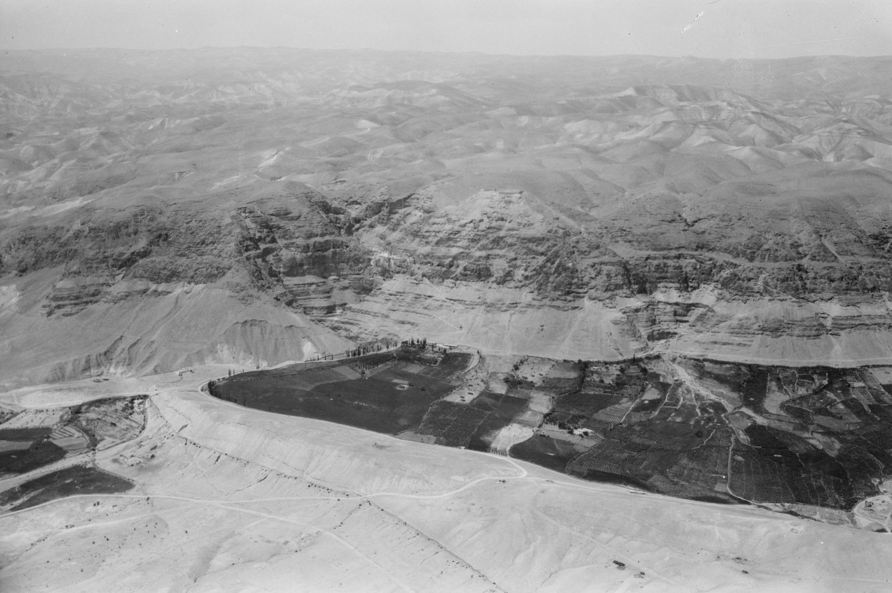
유대 광야와 시험산 · 1930년대 사진가의 기록장에 적힌 제목은 ‘유대 광야와 시험산’이에요. 높은 하늘에서 내려다보며 찍은 사진이에요. 예루살렘 동쪽에서 요단 골짜기까지 이런 메마른 언덕이 이어져요. 예수님의 40일도 이런 땅에서였어요. 원본 크게 보기가상 복원 · AI가 색을 짐작해 입힌 것이라 실제 색과 다를 수 있어요.
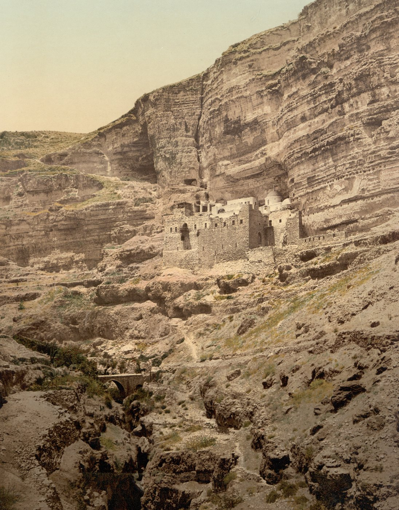
와디 켈트의 절벽 수도원 · 1890년대 컬러 인쇄본 옛 사진의 제목은 ‘엘리야 수도원과 그릿 시내’예요. 엘리야가 숨어 지내며 까마귀가 날라다 준 떡과 고기를 먹은 ‘그릿 시냇가’(왕상 17:3~6)를 이 골짜기로 보는 전통이 있어요. 5세기에 수도사들이 그 동굴 곁에 수도원을 세웠어요. 선지자들과 예수님처럼 광야에서 기도하려고요. 흑백 원판에 색을 입혀 찍어 낸 ‘포토크롬’이에요. 원본 크게 보기
눈 감고 상상해 보기먹을 것도 그늘도 없는 광야에서 40일. 가장 배고플 때 ‘이렇게 하면 쉬워’ 하는 목소리가 들린다면 어떤 마음이 들까요?
조심할 점 아이들은 ‘시험’을 학교 시험으로 들을 수 있어요. 여기서는 ‘옳지 않은 쪽으로 끌어당기는 일’이라고 풀어 주세요. 마귀를 무섭게 그리기보다, 예수님이 무엇으로 이기셨는지에 마음을 두게 해 주세요. 시험산의 동굴은 오래된 전통이고, 성경이 장소를 정해 말하지는 않아요.
함께 보기 · 선생님이 더 읽을 것
예수님이 세 번 대답하신 “기록되었으되”는 모두 신명기 말씀이에요(신 8:3, 6:16, 6:13). 아이와 함께 그 구절을 찾아 읽어 보세요.
「돌아온 아들」 바르톨로메 에스테반 무리요, 1667~1670년 미국 워싱턴, 내셔널 갤러리
사순절 둘째 주일 · 돌아온 아들2월 21일 사순절 둘째 주일 · 누가복음 15:11~32
이 그림이 여는 질문
아빠는 왜 혼내지 않았어요?
아들은 맨발로 무릎을 꿇었습니다. 아버지는 두 팔로 아들을 감싸 안고, 하인들은 벌써 새 옷을 들고 달려옵니다.
그림 속에서 찾아보기
아들의 발을 보세요. 신발을 신었나요? 발치에서 반기는 작은 동물도 찾아보세요.
하인들이 들고 오는 것을 찾아보세요. 새 옷 말고 작은 반지도 있어요.
잔치에 쓸 송아지도 찾아보세요. 누가 데려오고 있나요?
이야기
예수님이 죄인들과 어울려 함께 먹는다고 수군거리는 사람들에게 들려주신 이야기예요(15:1~2). 둘째 아들은 아버지에게 재산을 미리 받아 먼 나라로 가서 다 써 버렸어요. 흉년이 들자 남의 집 돼지를 치게 되었고, “돼지 먹는 쥐엄 열매로 배를 채우고자 하되 주는 자가 없”었지요(15:16). 그제야 정신이 든 아들은 아버지께 돌아가기로 해요.
“아직도 거리가 먼데 아버지가 그를 보고 측은히 여겨 달려가 목을 안고 입을 맞추니”(15:20). 아버지는 종들에게 제일 좋은 옷을 입히고, 손에 가락지를 끼우고, 발에 신을 신기라고 해요. 살진 송아지를 잡아 잔치도 열지요(15:22~23). 들에서 돌아온 형은 화가 나서 들어가지 않으려 했지만, 아버지는 형에게도 나와서 권했어요(15:28).
스페인 세비야의 화가 무리요가 1667~1670년 무렵 그린 그림이에요. 세비야의 ‘자선 형제회’는 가난한 사람을 돌보는 일을 하던 모임인데, 그 성당을 위해 큰 그림 여덟 점을 맡겼어요. 무리요도 이 형제회의 회원이었지요. 이 그림은 형제회가 지키던 자비의 일 가운데 ‘헐벗은 사람에게 옷을 입히는 일’을 보여 줘요. 높이 2.4미터, 너비 2.6미터나 되는 큰 그림이에요. 1810년 프랑스 군의 술트 원수가 가져간 뒤 여러 손을 거쳐, 1948년부터 미국 워싱턴의 내셔널 갤러리에 있어요. 세비야의 성당에는 지금 복제화가 걸려 있어요.
알고 보면
‘쥐엄 열매’는 지중해 둘레에서 자라는 쥐엄나무(캐럽)의 꼬투리예요. 길쭉한 꼬투리 속에 달콤한 과육이 들어 있어요. 주로 돼지나 소에게 먹였고, 사람은 먹을 것이 없을 때나 먹었다고 해요. 게다가 유대 사람들에게 돼지는 먹지 않는 짐승이었어요(레 11:7). 아들이 얼마나 낮은 곳까지 내려갔는지, 이야기를 듣던 사람들은 금세 알아챘을 거예요.
그 시절로 가 보기
그곳은 · 이야기 속 들판과 아버지의 집예수님의 비유라 지도에 나오는 곳은 아니에요. 하지만 이야기 안에는 그 시절 사람들이 날마다 보던 것들이 있어요. 들판의 쥐엄나무와 돼지 떼, 잔칫날의 송아지, 둘러앉아 함께 먹는 밥상.
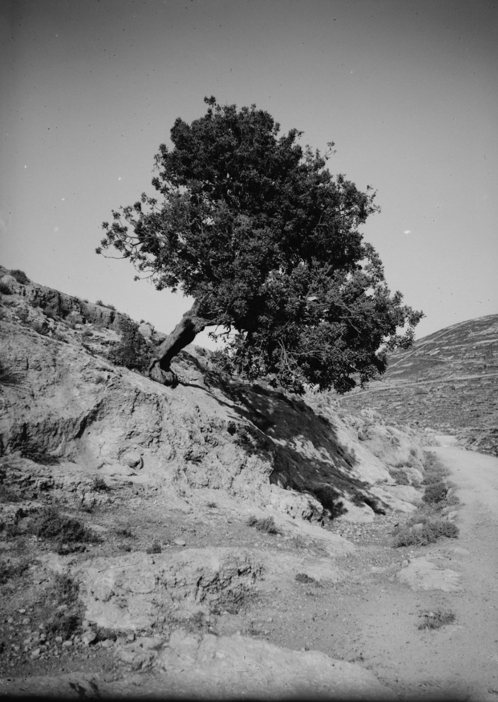
쥐엄나무(캐럽) · 1900년 사진가가 ‘나무와 덤불’이라는 묶음으로 찍은 사진이에요. 이 나무에 달리는 길쭉한 꼬투리가 둘째 아들이 먹고 싶어 한 쥐엄 열매예요. 원본 크게 보기가상 복원 · AI가 색을 짐작해 입힌 것이라 실제 색과 다를 수 있어요.
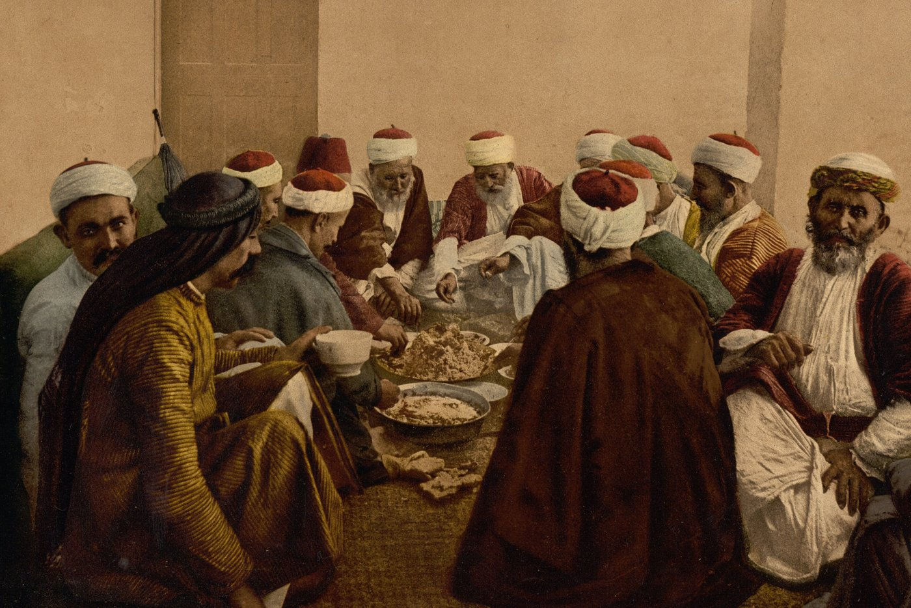
갈멜산 마을 사람들의 식사 · 1890년대 컬러 인쇄본 옛 사진의 제목은 ‘식사하는 갈멜산의 드루즈 농부들’이에요. 식탁 대신 바닥에 둘러앉아 한 상에서 함께 먹지요. 아버지는 돌아온 아들을 위해 “우리가 먹고 즐기자” 하며 잔치를 열었어요(15:23). 원본 크게 보기
눈 감고 상상해 보기옷은 해지고 신발도 없이 집으로 돌아가는 길. ‘뭐라고 말해야 하지?’ 하고 연습하는데, 저 멀리서 아버지가 달려온다면 어떤 마음일까요?
조심할 점 형의 마음(15:28~30)도 함께 다뤄 주세요. 늘 착하게 지낸 아이는 형 편에 설 수 있어요. 아버지는 형에게도 “얘 너는 항상 나와 함께 있으니 내 것이 다 네 것이로되” 하고 말했어요(15:31). 돼지를 ‘더러운 동물’이라고 놀리기보다, 유대 사람들에게 얼마나 낯선 일이었는지만 짚어 주세요.
함께 보기 · 선생님이 더 읽을 것
함께 느끼기 방의 렘브란트 「탕자의 귀향」과 나란히 보세요. 무리요의 그림에는 하인들이 바쁘게 오가고 개가 반기지만, 렘브란트는 아버지 품 안의 조용한 순간을 그렸어요.
「아이들을 축복하시는 예수님」 소 루카스 크라나흐와 공방, 1545~1550년 무렵 미국 뉴욕, 메트로폴리탄 미술관
사순절 셋째 주일 · 아이들을 안으신 예수님2월 28일 사순절 셋째 주일 · 마가복음 10:13~16
이 그림이 여는 질문
예수님도 아기를 안아 주셨어요?
엄마들이 아기를 안고 몰려옵니다. 제자들은 막으려 했지만, 예수님은 아기를 받아 품에 안으십니다.
그림 속에서 찾아보기
예수님 품에 안긴 아기를 찾아보세요. 아기는 무엇을 하고 있나요?
엄마들의 옷과 모자를 보세요. 2천 년 전 이스라엘 옷 같나요, 그림을 그린 독일 사람들의 옷 같나요?
한쪽에서 이 모습을 지켜보는 제자들을 찾아보세요. 얼굴이 어때 보이나요?
이야기
“사람들이 예수께서 만져 주심을 바라고 어린 아이들을 데리고 오매 제자들이 꾸짖거늘”(10:13). 예수님은 그 모습을 “보시고 노하시어” 말씀하셨어요. “어린 아이들이 내게 오는 것을 용납하고 금하지 말라 하나님의 나라가 이런 자의 것이니라”(10:14). 그리고 “그 어린 아이들을 안고 그들 위에 안수하시고 축복하시니라”(10:16). 예수님이 ‘노하셨다’고 하는 장면은 성경에 많지 않아요. 아이들을 막는 일에 그만큼 마음이 상하셨던 거예요.
이 장면만 따로 그린 그림은 종교개혁 전에는 찾아보기 어려워요. 루터가 있던 독일 비텐베르크에서 크라나흐 공방이 이 주제를 여러 점 그리면서 널리 퍼졌어요. 그 무렵 아기에게 세례를 주는 것을 반대한 사람들(재세례파)이 있었는데, 루터는 이 마가복음 말씀을 들어 아기 세례를 옹호했어요. 학자들은 이 그림들이 그 논쟁과 이어져 있다고 봐요.
메트로폴리탄 미술관의 이 그림은 아버지의 이름을 이어받은 아들 크라나흐와 공방이 1545~1550년 무렵 그린 작은 그림이에요. 가로 22센티미터, 세로 17센티미터로 작은 공책만 하지요. 그림 맨 위에는 “어린 아이들이 내게 오는 것을 용납하고 금하지 말라”는 마가복음 10장 14절 말씀이 루터의 독일어 성경 말로 적혀 있어요. 「예수님과 간음한 여인」과 짝을 이루도록 만든 것으로 보이는데, 이 두 장면을 짝지은 것은 이 그림이 처음이었다고 해요.
알고 보면
엄마들의 옷과 모자는 2천 년 전 이스라엘이 아니라 화가가 살던 16세기 독일의 옷차림이에요. 화가는 성경 이야기를 자기 동네에서 일어난 일처럼 그렸어요. 그림 앞에 선 엄마 아빠들은 ‘우리 아기도 예수님께 데려가도 되겠구나’ 하고 느꼈을지도 몰라요.
그 시절로 가 보기
그곳은 · 요단 강 건너편으로 가는 길마가복음은 이 일이 예수님이 “유대 지경과 요단 강 건너편으로 가시”던 길에 있었다고 해요(10:1). 예루살렘으로 올라가시기 얼마 전이지요. 무리가 다시 모여들었고, 그 가운데 아기를 안고 온 사람들이 있었어요.
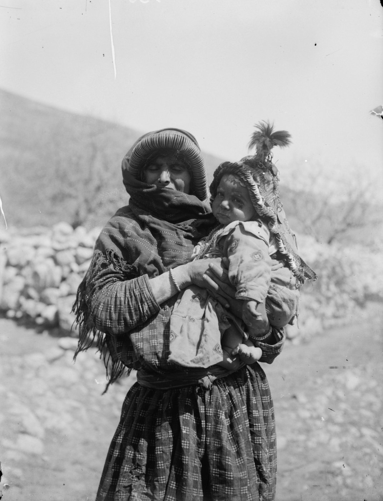
아기를 안은 여인 · 1898~1946년 사이 사진가의 기록장에 남은 제목은 ‘아기를 안은 아랍 여인’이에요. 예수님께 아이를 데려온 사람들도 이렇게 아기를 품에 안고 왔겠지요. 원본 크게 보기가상 복원 · AI가 색을 짐작해 입힌 것이라 실제 색과 다를 수 있어요.
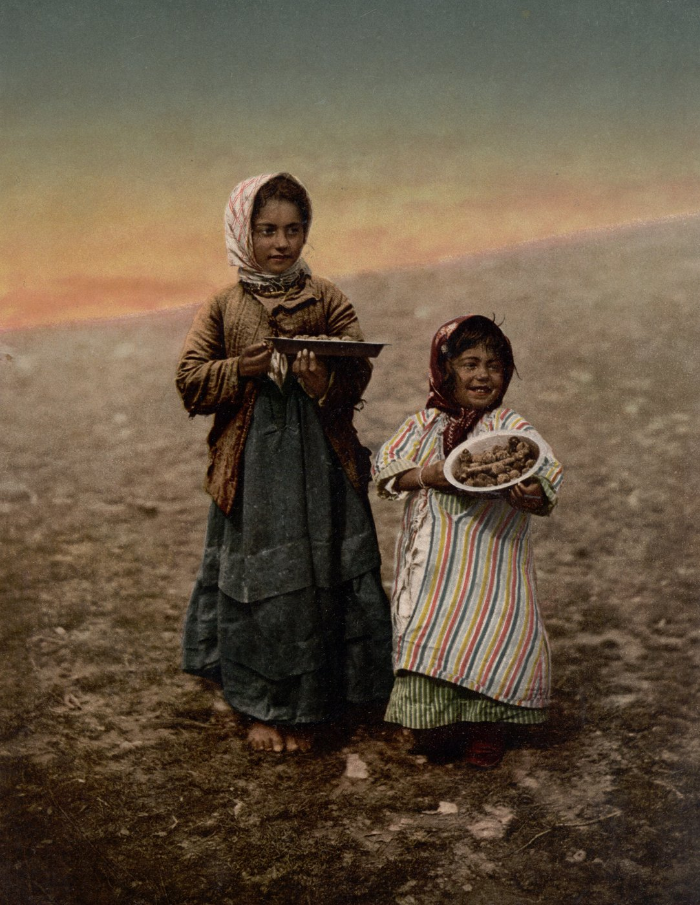
예루살렘 근처 마을의 아이들 · 1890년대 컬러 인쇄본 130년쯤 전 예루살렘 둘레 마을에 살던 아이들이에요. 흑백 원판에 색을 입혀 찍어 낸 ‘포토크롬’이라, 옷 색깔은 사진가의 메모를 따라 칠한 것이에요. 원본 크게 보기
눈 감고 상상해 보기어른들 틈에서 키 작은 아이는 앞이 잘 보이지 않아요. 누가 막아설 때, 예수님이 먼저 불러 주신다면 어떤 기분일까요?
그림: 소 루카스 크라나흐와 공방, 「아이들을 축복하시는 예수님」(원제: Christ Blessing the Children), 1545~1550년 무렵, 뉴욕 메트로폴리탄 미술관. 사진: 메트로폴리탄 미술관 공개 이미지(CC0), 위키미디어 공용. 옛 사진: 미국 의회도서관 매슨 컬렉션, ‘Arab woman holding child’(1898~1946년, 위키미디어 공용, 알려진 저작권 제한 없음). 1890년대 컬러 인쇄본: 미국 의회도서관 포토크롬 컬렉션, ‘Native children from neighborhood of Jerusalem’(알려진 저작권 제한 없음).
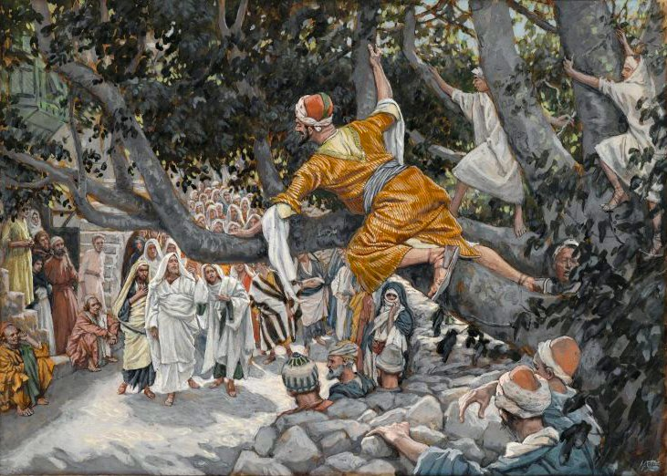
「돌무화과나무 위에서 예수님을 기다리는 삭개오」 제임스 티소, 1886~1896년 미국 뉴욕, 브루클린 미술관
사순절 넷째 주일 · 나무 위의 삭개오3월 7일 사순절 넷째 주일 · 누가복음 19:1~10
이 그림이 여는 질문
삭개오는 왜 나무에 올라갔어요?
나뭇가지 사이에서 한 남자가 숨죽이고 길을 내려다봅니다. 곧 예수님이 이 길로 지나가실 거예요.
그림 속에서 찾아보기
나뭇가지 위에 올라간 사람을 찾아보세요. 무슨 색 옷을 입었나요?
그 사람의 눈이 어디를 향하는지 따라가 보세요. 무엇을 기다리고 있을까요?
나무 위에 올라간 사람이 또 있어요. 누구누구인지 찾아보세요. 이 사람들은 왜 올라갔을까요?
이야기
예수님이 여리고를 지나가실 때였어요. 그곳에 “삭개오라 이름하는 자가 있으니 세리장이요 또한 부자”였어요(19:2). 세리는 로마를 위해 세금을 걷는 사람이라 사람들이 반기지 않았지요. 삭개오는 예수님이 어떤 분인지 보고 싶었지만 “키가 작고 사람이 많아” 볼 수 없었어요(19:3). 그래서 앞으로 달려가 돌무화과나무에 올라갔어요(19:4).
예수님은 그 나무 아래에 이르러 위를 쳐다보시고 이름을 부르셨어요. “삭개오야 속히 내려오라 내가 오늘 네 집에 유하여야 하겠다”(19:5). 사람들은 “저가 죄인의 집에 유하러 들어갔도다” 하고 수군거렸지만(19:7), 삭개오는 기뻐하며 예수님을 맞았어요. 그리고 재산의 절반을 가난한 사람들에게 주고, 누구의 것을 속여 빼앗았으면 네 갑절로 갚겠다고 했어요(19:8). 예수님은 말씀하셨어요. “인자가 온 것은 잃어버린 자를 찾아 구원하려 함이니라”(19:10).
프랑스 화가 제임스 티소는 예수님의 삶을 그리기로 마음먹고, 1886년과 1889년 두 번이나 성지를 찾아가 그 땅과 사람들을 직접 보고 그렸어요. 그렇게 그린 그림이 350점쯤 되는데, 미국 브루클린 미술관이 1900년 시민들의 모금으로 모두 사들였어요. 이 그림은 그 가운데 하나로, 가로 25센티미터, 세로 18센티미터의 작은 그림이에요. 제목처럼, 예수님이 지나가시기를 나무 위에서 기다리는 삭개오를 그렸어요. 길 왼쪽에는 흰옷을 입은 예수님이 제자들과 함께 걸어오시고, 그 뒤로 사람들이 길게 따라와요.
알고 보면
돌무화과나무는 잎은 뽕나무를, 열매는 무화과를 닮아서 ‘무화과뽕나무’라고도 불러요. 둥치가 짧고 굵으며 낮은 가지가 옆으로 넓게 뻗어서, 키 작은 사람도 오르기 쉬워요. 추위에 약해 서늘한 산지보다는 여리고처럼 따뜻하고 낮은 땅에서 잘 자라요.
그 시절로 가 보기
그곳은 · 여리고여리고는 바다보다 250미터쯤 낮은 곳에 있어 세계에서 가장 낮은 도시로 꼽혀요. 사막 한가운데 샘이 솟는 오아시스라, 성경은 “종려나무의 성읍 여리고”라고 불러요(신 34:3). 갈릴리에서 예루살렘으로 올라가는 길이 이곳을 지났어요.
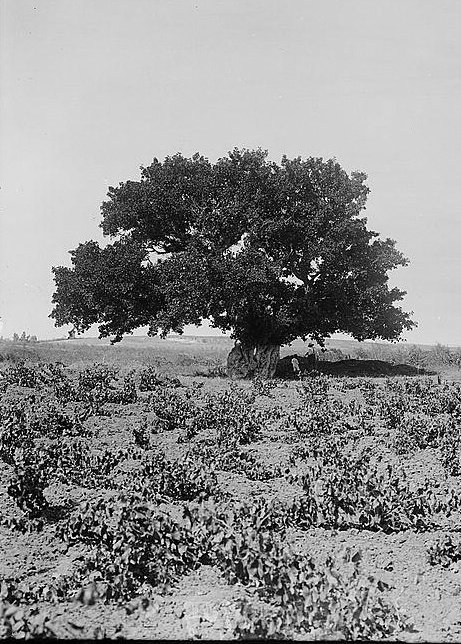
돌무화과나무 · 1900년 사진가가 ‘나무와 덤불’ 묶음으로 찍은 돌무화과나무예요. 오늘날 여리고 시내에도 ‘삭개오 나무’라고 불리는 오래된 돌무화과나무가 있어요. 2천 년 전 바로 그 나무라는 근거는 없지만, 순례자들이 찾아와 이 이야기를 떠올려요. 원본 크게 보기가상 복원 · AI가 색을 짐작해 입힌 것이라 실제 색과 다를 수 있어요.
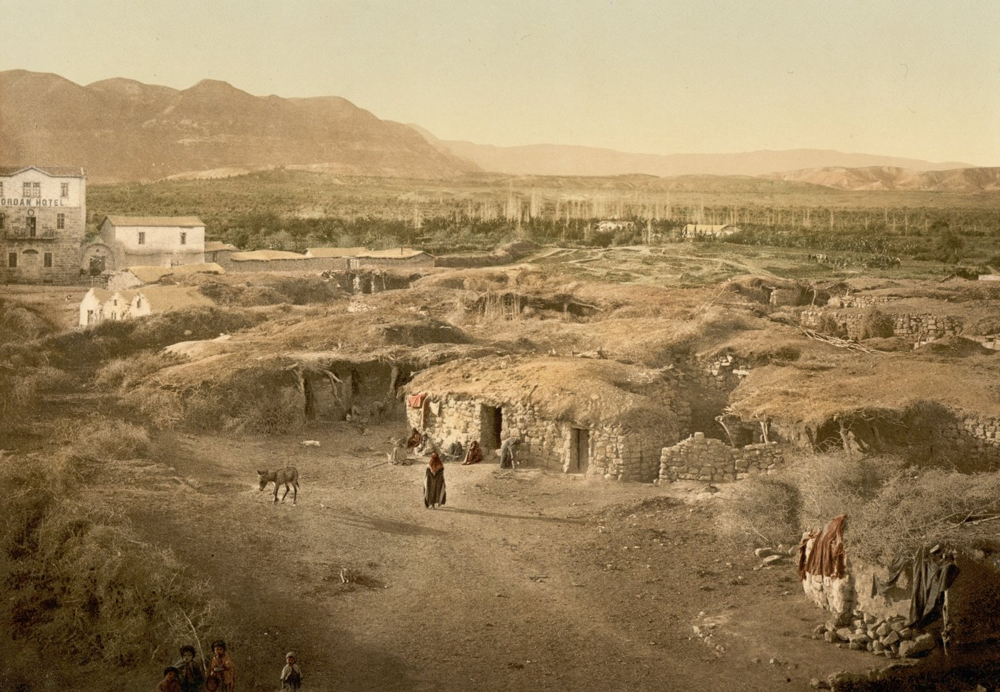
여리고 전경 · 1890년대 컬러 인쇄본 130년쯤 전의 여리고예요. 둘레의 메마른 산과 달리, 샘물 덕분에 마을에는 나무가 자라요. 흑백 원판에 색을 입혀 찍어 낸 ‘포토크롬’이에요. 원본 크게 보기
눈 감고 상상해 보기몰래 보려고 올라간 나무 위. 그런데 예수님이 멈춰 서서 내 이름을 부르신다면 어떤 마음이 들까요?
그림: 제임스 티소, 「돌무화과나무 위에서 예수님을 기다리는 삭개오」(원제: Zacchaeus in the Sycamore Awaiting the Passage of Jesus), 1886~1896년, 뉴욕 브루클린 미술관. 사진: 위키미디어 공용(저작권 만료). 옛 사진: 미국 의회도서관 매슨 컬렉션, ‘Trees and shrubs. Sycomore tree. (Ficus sycomorus L.)’(1900년, 위키미디어 공용, 알려진 저작권 제한 없음). 1890년대 컬러 인쇄본: 미국 의회도서관 포토크롬 컬렉션, ‘General view, Jericho’(알려진 저작권 제한 없음).
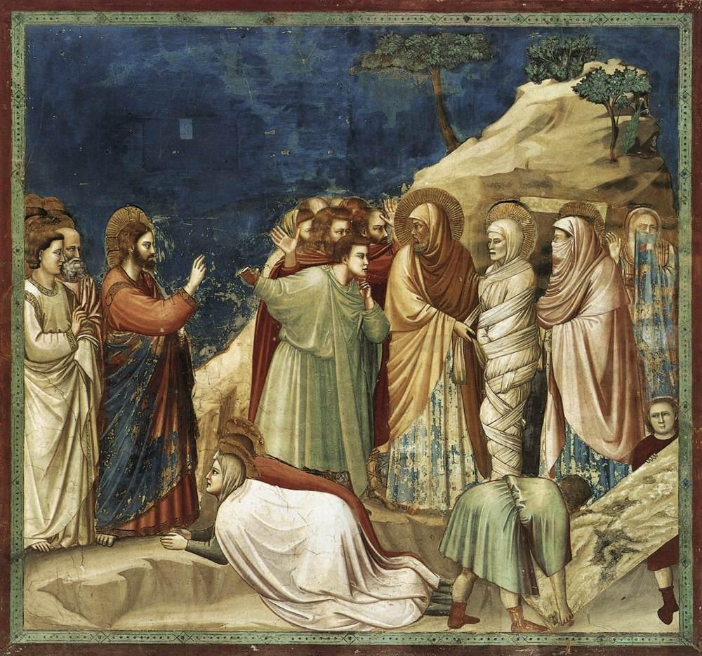
「나사로를 살리심」 조토 디 본도네, 1304~1306년 무렵 이탈리아 파도바, 스크로베니 예배당
무덤 앞에서 사람들이 코를 막습니다. 그 한가운데서 흰 천에 꽁꽁 싸인 나사로가 걸어 나옵니다.
그림 속에서 찾아보기
옷자락으로 코를 가린 사람들을 찾아보세요. 왜 코를 막았을까요?
예수님 발 앞에 엎드린 두 여인을 찾아보세요. 누구일까요?
앞쪽에 놓인 커다란 돌판을 찾아보세요. 누가 그 돌을 옮기고 있나요?
이야기
베다니에 사는 나사로가 병이 들었어요. 누이 마르다와 마리아는 예수님께 사람을 보냈지요. “예수께서 본래 마르다와 그 동생과 나사로를 사랑하시더니”(11:5). 그런데 예수님이 도착하셨을 때 나사로는 “무덤에 있은 지 이미 나흘”이었어요(11:17). 마르다는 “주께서 여기 계셨더라면 내 오라버니가 죽지 아니하였겠나이다”라고 했고(11:21), 예수님은 “나는 부활이요 생명이니 나를 믿는 자는 죽어도 살겠고” 하고 말씀하셨어요(11:25).
사람들이 우는 것을 보신 예수님도 “눈물을 흘리시더라”(11:35). 무덤은 굴이었고 돌로 막혀 있었어요. 예수님이 돌을 옮기라고 하시자 마르다가 말렸어요. “주여 죽은 지가 나흘이 되었으매 벌써 냄새가 나나이다”(11:39). 돌을 옮기자 예수님은 큰 소리로 부르셨어요. “나사로야 나오라”(11:43). 그러자 죽었던 사람이 손발을 베로 동인 채 걸어 나왔어요. “풀어 놓아 다니게 하라”(11:44).
이탈리아 파도바의 스크로베니 예배당 벽에 조토가 그린 벽화예요. 성탄절 코스의 「동방박사의 경배」도 같은 예배당에 있지요. 조토는 마르다의 걱정을 그림에 그대로 옮겼어요. 나사로 곁의 사람들이 옷자락으로 코를 막고 있어요. 다른 화가들의 나사로 그림에서는 보기 드문 모습이에요. 요한복음에는 마리아가 예수님 발 앞에 엎드렸다고 나오는데(11:32), 조토는 두 자매를 함께 엎드리게 그렸어요.
알고 보면
“예수께서 눈물을 흘리시더라”(11:35)는 영어 킹 제임스 성경에서 “Jesus wept.” 단 두 낱말이에요. 그래서 성경에서 가장 짧은 절로 자주 소개돼요. 예수님은 곧 나사로를 살리실 줄 아시면서도, 슬퍼하는 사람들 곁에서 함께 우셨어요.
그 시절로 가 보기
그곳은 · 베다니(오늘의 알에이자리야)베다니는 “예루살렘에서 가깝기가 한 오 리쯤” 되는 마을이었어요(11:18). 감람산 동쪽 비탈에 있지요. 오늘날 이 마을의 아랍어 이름 ‘알에이자리야’는 ‘나사로의 마을’이라는 뜻이에요.
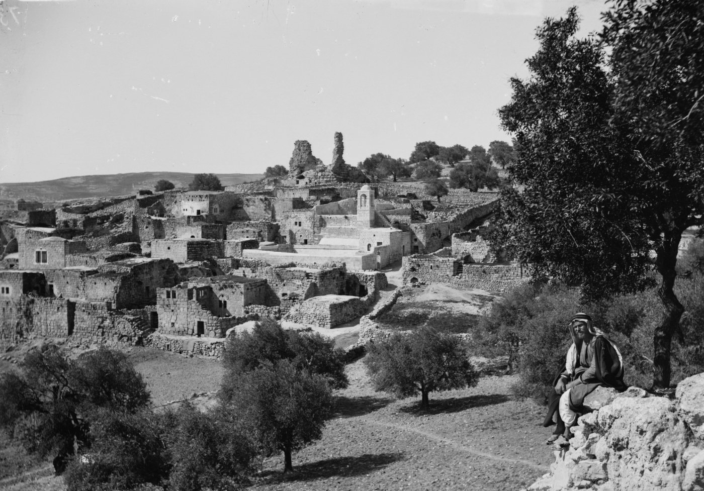
베다니 마을 · 1898~1946년 사이 사진가의 기록장에 남은 제목은 ‘베다니. 마을 전경’이에요. 예수님은 이 마을의 마르다와 마리아, 나사로와 함께 식탁에 앉기도 하셨어요(요 12:1~2). 원본 크게 보기가상 복원 · AI가 색을 짐작해 입힌 것이라 실제 색과 다를 수 있어요.
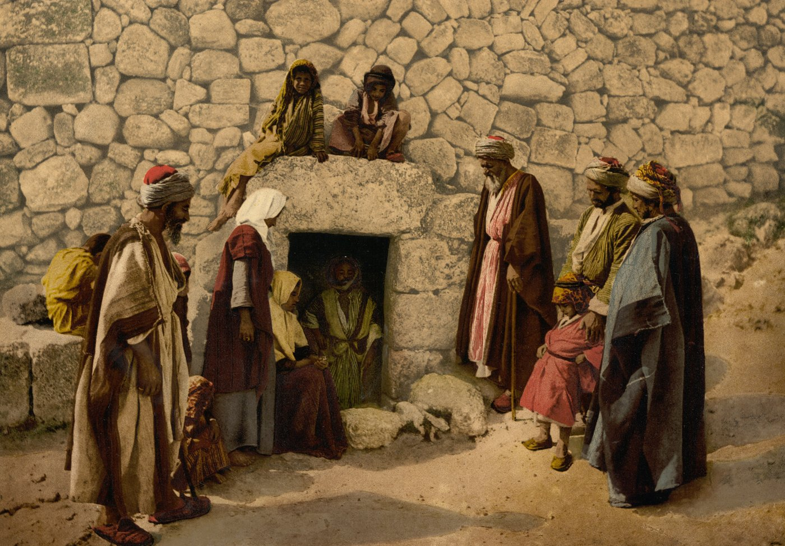
베다니의 나사로 무덤 · 1890년대 컬러 인쇄본 오래전부터 나사로의 무덤으로 기억해 온 곳이에요. 오늘날 이 무덤에 들어가려면 바위를 깎아 만든 가파른 계단 24개를 내려가요. 16세기에 무덤 위 교회 자리에 모스크가 서면서 옛 입구가 막히자, 프란치스코회 수도사들이 길 쪽에 새 입구를 낸 것이에요. 원본 크게 보기
눈 감고 상상해 보기사랑하는 사람을 잃은 지 나흘. 모두가 이제 끝났다고 생각할 때, 예수님이 무덤 앞에 서서 이름을 부르신다면 어떨까요?
조심할 점 가족이나 반려동물을 잃은 아이가 있다면 조심스럽게 다뤄 주세요. ‘예수님이 오시면 다 살아나’처럼 약속하기보다, 예수님도 슬퍼하며 우셨다는 데 먼저 머물러 주세요. 코를 막는 장면은 웃음거리가 되기 쉬우니, 마르다가 왜 걱정했는지(죽은 지 나흘) 차분히 설명해 주세요.
그림: 조토 디 본도네, 「나사로를 살리심」(원제: Raising of Lazarus), 1304~1306년 무렵, 파도바 스크로베니 예배당. 사진: 위키미디어 공용(저작권 만료). 옛 사진: 미국 의회도서관 매슨 컬렉션, ‘Bethany. General view of the village’(1898~1946년, 위키미디어 공용, 알려진 저작권 제한 없음). 1890년대 컬러 인쇄본: 미국 의회도서관 포토크롬 컬렉션, ‘Tomb of Lazarus, Bethany’(알려진 저작권 제한 없음).
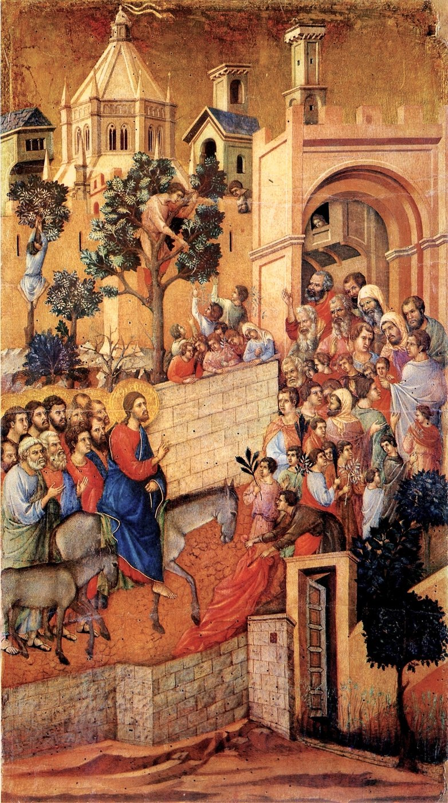
「예루살렘에 들어가심」 두초 디 부오닌세냐, 1308~1311년 이탈리아 시에나, 대성당 미술관
종려주일 · 나귀를 타고 오신 왕3월 21일 종려주일 · 마태복음 21:1~11
이 그림이 여는 질문
왕이 왜 나귀를 타요?
성문을 향해 돌길을 오르는 나귀. 나무 위에서는 사람들이 가지를 꺾고, 길에는 겉옷이 깔립니다.
그림 속에서 찾아보기
나무 위에 올라간 사람들을 찾아보세요. 무엇을 하고 있나요?
예수님이 탄 나귀 뒤를 보세요. 작은 나귀가 한 마리 더 있어요. 길바닥에는 무엇이 깔려 있나요?
성벽 너머 높이 솟은 하얀 건물을 찾아보세요. 예수님은 성에 들어가 어디로 가셨을까요?
이야기
예수님이 예루살렘 가까이 감람산 벳바게에 이르셨을 때, 두 제자를 보내 나귀와 나귀 새끼를 끌고 오게 하셨어요(21:1~2). 오래전 스가랴 선지자의 말이 이루어진 거예요. “네 왕이 네게 임하나니 그는 겸손하여 나귀, 곧 멍에 메는 짐승의 새끼를 탔도다”(21:5, 슥 9:9). 사람들은 겉옷과 나뭇가지를 길에 펴고 외쳤어요. “호산나 다윗의 자손이여 찬송하리로다 주의 이름으로 오시는 이여 가장 높은 곳에서 호산나”(21:9). 온 성이 술렁이며 물었어요. “이는 누구냐”(21:10).
요한복음은 사람들이 “종려나무 가지를 가지고 맞으러 나가” 외쳤다고 해요(요 12:13). 그래서 이날을 ‘종려주일’이라고 불러요. 이날부터 부활절 전날까지의 한 주를 고난주간이라고 하지요.
이 그림은 1장면 「산 위의 시험」과 함께 두초의 큰 제단화 「마에스타」 뒷면에 있던 그림이에요. 두 장면씩 그린 다른 판들과 달리, 이 판에는 한 장면만 크게 그렸어요. 두초는 예루살렘을 성문과 탑이 선 이탈리아의 언덕 도시처럼 그렸지요. 1311년 6월 9일 제단화가 완성되자, 시에나 사람들은 가게 문을 닫고 북과 나팔을 울리며 화가의 작업실에서 대성당까지 그림을 모시고 행진했어요. 그림 속 행렬처럼요.
알고 보면
‘호산나’는 원래 히브리 말로 ‘구원해 주세요!’라는 뜻이에요. 시편 118편 25절 “여호와여 구하옵나니 이제 구원하소서”가 바로 그 말이고, 이어지는 26절이 “여호와의 이름으로 오는 자가 복이 있음이여”예요. 사람들은 이 시편을 외치며 예수님을 맞았어요.
그 시절로 가 보기
그곳은 · 감람산의 벳바게벳바게는 감람산 동쪽 비탈의 작은 마을로, 이름은 ‘덜 익은 무화과의 집’이라는 뜻이에요. 오늘날 예루살렘의 그리스도인들은 종려주일 오후 벳바게 성당에서 출발해 감람산을 넘고 겟세마네를 지나, 사자문으로 옛 성에 들어가는 행진을 해요. 2023년에는 2만 명쯤 함께 걸었어요.
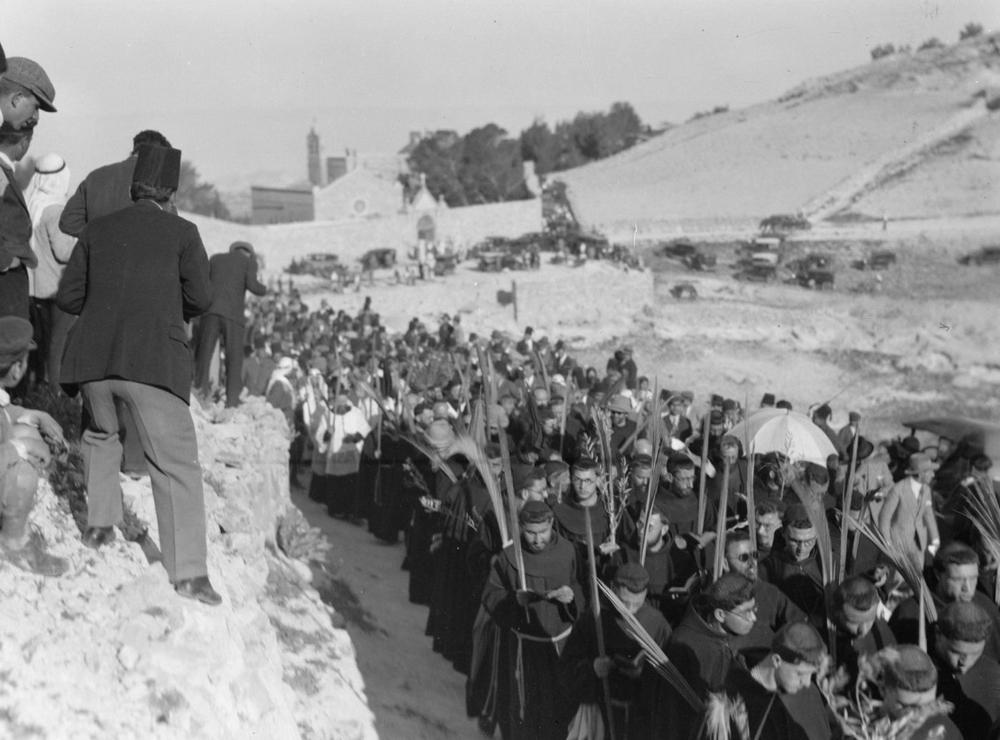
벳바게의 종려주일 행진 · 1930년대 사진가의 기록장에 남은 제목은 ‘벳바게의 종려주일 행진’이에요. 90년쯤 전에도 사람들은 이렇게 가지를 들고 벳바게에서 예루살렘까지 걸었어요. 원본 크게 보기가상 복원 · AI가 색을 짐작해 입힌 것이라 실제 색과 다를 수 있어요.
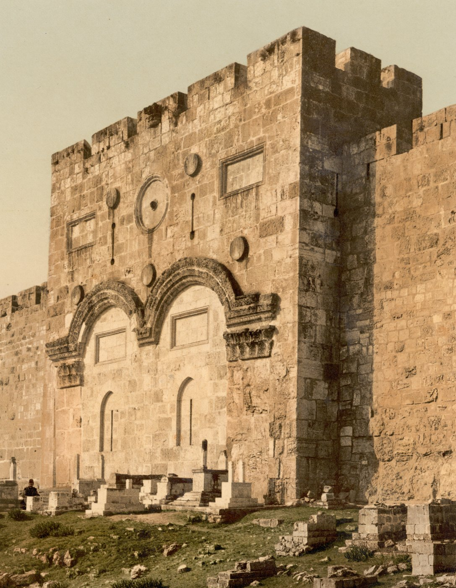
황금문(바깥쪽) · 1890년대 컬러 인쇄본 성전산 동쪽 성벽의 문으로, 감람산을 바로 마주 봐요. 오래전부터 돌로 막혀 있어요. 그리스도인들은 예수님이 종려주일에 이 문으로 들어오셨다고 전해 왔고, 유대 전통은 메시아가 이 문으로 오신다고 기다려요(겔 44:1~3 참고). 원본 크게 보기
눈 감고 상상해 보기힘센 말이 아니라 작은 나귀를 타고, 군대가 아니라 사람들의 노래에 둘러싸여 오는 왕. 그 길가에 서 있다면 무엇을 흔들고 무엇이라고 외칠까요?
Lent from the wilderness to the gates of Jerusalem, through six works of art. The six Sundays of Lent: one picture and one question each, from forty hungry days in the desert to the road ringing with “Hosanna.”
1 Look at the art together2 Ask the question3 Step back in time4 Read the passage together
Tap Show it to the children under the art to fill the screen with the picture and old photos of the land, one question at a time. Tap a black-and-white photo to switch to an AI-colorized version.
This is a draft awaiting review. AI gathered the sources and wrote the text, so please check each card against ‘Sources’ at the bottom.
Two words tie the six scenes together: “came to his father” (Luke 15:20) and “seek” (Luke 19:10). The son who left home comes back to his father, and Jesus seeks out and calls the children the disciples tried to stop, Zacchaeus up in the tree, and Lazarus in the tomb. The road that began in the wilderness ends at the gate of Jerusalem, where palm branches wave.
The Temptation of Christ on the Mountain Duccio di Buoninsegna, 1308–1311 The Frick Collection, New York, USA
First Sunday in Lent · Tempted in the wildernessFeb 14 · First Sunday in Lent · Matthew 4:1–11
The question this painting opens
Was Jesus tempted too?
On a high mountaintop, small towns like toys spread out below. Jesus reaches out his hand and says, “Get behind me, Satan!”
Things to find in the painting
Find the dark figure standing in front of Jesus. What animal do the wings on its back look like?
Count the little towns below the mountain. What color are their towers and roofs?
Find the two angels standing behind Jesus. What have they come to do?
The story
After he was baptized, Jesus was led by the Spirit into the wilderness. “When he had fasted forty days and forty nights, he was hungry afterward” (4:2). Then the tempter came and tempted him three times: to turn stones into bread, to throw himself down from the top of the temple, and to fall down and worship the devil in return for all the kingdoms of the world. Each time Jesus answered with Scripture, saying, “It is written” (4:4, 7, 10).
This painting shows the third temptation. Duccio, a painter from Siena in Italy, made it as part of the Maestà, the great altarpiece for Siena Cathedral. That altarpiece was painted on both sides and held dozens of small scenes from the life of Jesus, and this is one of them. It is about 46 centimeters wide and 43 centimeters tall, and it has been at the Frick Collection in New York since 1927.
The towns below the mountain are “all the kingdoms of the world, and their glory” that the devil showed Jesus (4:8). Duccio painted the towns much smaller than the people. Instead of showing real sizes, he used size to show what matters more. The crowded towers and domes are said to recall the painter’s home city of Siena, with its towns perched on every hill.
Good to know
Lent is the forty days before Easter, modeled on the forty days Jesus fasted in the wilderness. Forty days appear elsewhere in the Bible too. Moses was on Mount Sinai “forty days and forty nights; he neither ate bread, nor drank water” (Exodus 34:28), and Elijah walked “forty days and forty nights to Horeb” (1 Kings 19:8). Western churches leave Sundays out of the count, so Lent begins on the Wednesday forty-six days before Easter, Ash Wednesday.
Step back in time
The place · The Judean wildernessThe Bible only says Jesus was tempted in ‘the wilderness.’ Since about the fourth century, people have remembered a cave in the cliffs west of Jericho as the place, and called the mountain ‘the Mountain of the Forty Days’ (Quarantania).
The wilderness of Judea and the Mount of Temptation · 1930s The title in the photographer’s logbook is ‘The wilderness of Judea & Mt. of Temptation.’ It was taken looking down from high in the air. Dry hills like these stretch from east of Jerusalem down to the Jordan Valley. Jesus’ forty days were spent in land like this. View the originalAI colorized · AI guessed the colors, so they may differ from the real ones.The cliff monastery in Wadi Qelt · 1890s color print The old photo is titled ‘Convent of Elijah and Brook of Kerith.’ One tradition places the brook Cherith, where Elijah hid and ravens brought him bread and meat (1 Kings 17:3–6), in this valley. In the fifth century, monks built a monastery beside the cave there, to pray in the wilderness as the prophets and Jesus had. It is a ‘photochrom’: color was added to a black-and-white negative and then printed. View the original
Close your eyes and imagineForty days in a wilderness with no food and no shade. If, at your hungriest, a voice said ‘Just do this, it’s easy,’ how would you feel?
Take care ‘Tempt’ may be an unfamiliar word for children. Explain it as ‘being pulled toward what isn’t right.’ Rather than making the devil frightening, help them notice how Jesus won. The cave on the Mount of Temptation is an old tradition; the Bible does not name the place.
See also · For teachers to read further
All three of Jesus’ answers, “It is written,” come from Deuteronomy (8:3, 6:16, 6:13). Look them up and read them together with the children.
The Revised Common Lectionary, used by many churches, reads Matthew 4:1–11 as the Gospel for the First Sunday in Lent in Year A. PC(USA) lectionary page
Sources (7)
Google Arts & Culture (The Frick Collection): 1308–11, tempera on panel, 43.2 × 46 cm, purchased 1927; a scene from the Maestà, a double-sided altarpiece for the high altar of Siena Cathedral; figures large and kingdoms small, a scale of values
Painting: Duccio di Buoninsegna, The Temptation of Christ on the Mountain, 1308–1311, The Frick Collection, New York. Photo: Wikimedia Commons (public domain). Old photo: Library of Congress, Matson Collection, ‘The wilderness of Judea & Mt. of Temptation’ (1934–1939, Wikimedia Commons, no known restrictions). 1890s color print: Library of Congress Photochrom Collection, ‘Convent of Elijah and Brook of Kerith, Wady-el-Keit’ (no known restrictions).
The Return of the Prodigal Son Bartolomé Esteban Murillo, 1667–1670 National Gallery of Art, Washington, USA
Second Sunday in Lent · The son who came homeFeb 21 · Second Sunday in Lent · Luke 15:11–32
The question this painting opens
Why didn’t the father scold him?
The son kneels in bare feet. The father wraps him in both arms, and the servants are already running up with new clothes.
Things to find in the painting
Look at the son’s feet. Is he wearing shoes? Find the little animal at his feet that is so glad to see him, too.
Find what the servants are bringing. Besides new clothes, there is a small ring.
Find the calf for the feast. Who is leading it in?
The story
Jesus told this story to people who grumbled that he welcomed sinners and ate with them (15:1–2). A younger son asked his father for his share of the property early, went to a far country, and spent it all. When a famine came, he ended up feeding someone’s pigs. “He wanted to fill his belly with the husks that the pigs ate, but no one gave him any” (15:16). Then he came to his senses and decided to go back to his father.
“But while he was still far off, his father saw him, and was moved with compassion, and ran, and fell on his neck, and kissed him” (15:20). The father told his servants to put the best robe on him, a ring on his hand, and shoes on his feet, and to kill the fattened calf for a feast (15:22–23). The older brother came in from the field, grew angry and would not go in, but the father came out and begged him too (15:28).
Murillo, a painter in Seville in Spain, painted this picture around 1667–1670. Seville’s Brotherhood of Charity, which looked after poor people, ordered eight large paintings for its church, and Murillo himself was a member. This one shows one of the works of mercy the brotherhood kept: clothing the naked. It is a big painting, 2.4 meters tall and 2.6 meters wide. In 1810 the French marshal Soult took it away; after passing through several hands, it has been at the National Gallery of Art in Washington since 1948. A copy hangs in the church in Seville today.
Good to know
The ‘husks’ the son wanted to eat were most likely carob pods, from a tree that grows all around the Mediterranean. Inside the long pods is a sweet pulp. They were mostly fed to pigs and cattle, and people ate them only when there was nothing else. And for Jewish listeners, pigs were animals they did not eat (Leviticus 11:7). Anyone hearing the story would have understood at once how low the son had fallen.
Step back in time
The place · The fields of the story and the father’s houseThis is one of Jesus’ parables, so it is not a place on a map. But the story is full of things people saw every day back then: carob trees and herds of pigs in the fields, a calf for a feast day, and a shared meal around a common dish.
A carob tree · 1900 The photographer took this as part of a series called ‘Trees and shrubs.’ The long pods that grow on this tree are the ‘husks’ the younger son longed to eat. View the originalAI colorized · AI guessed the colors, so they may differ from the real ones.A village meal on Mount Carmel · 1890s color print The old photo is titled ‘Peasant Druses of Mount Carmel taking a meal.’ Instead of sitting at a table, they sit on the ground in a circle and eat from one spread. The father threw a feast for his son who came home: “let us eat, and celebrate” (15:23). View the original
Close your eyes and imagineWalking home in torn clothes and no shoes, practicing what to say. What would it feel like if, far off, your father came running toward you?
Take care Talk about the older brother’s feelings too (15:28–30). A child who has always been good may side with him. The father says to him as well, “Son, you are always with me, and all that is mine is yours” (15:31). Rather than mocking pigs as ‘dirty animals,’ just point out how strange this work would have been for Jewish listeners.
See also · For teachers to read further
Compare it with Rembrandt’s The Return of the Prodigal Son in the Experience Together room. In Murillo’s painting the servants bustle and a dog jumps for joy; Rembrandt painted the quiet moment inside the father’s embrace.
The Revised Common Lectionary, used by many churches, reads Luke 15:1–3, 11–32 on the Fourth Sunday in Lent in Year C. List of lectionary Gospel readings
Sources (8)
National Gallery of Art artwork page: 1667/1670, oil on canvas, gift of the Avalon Foundation 1948; a small white dog jumping at the son’s bare feet; the father’s gray beard and black skullcap; the robe, ring and fattened calf
Painting: Bartolomé Esteban Murillo, The Return of the Prodigal Son, 1667–1670, National Gallery of Art, Washington. Photo: National Gallery of Art open access (CC0), Wikimedia Commons. Old photo: Library of Congress, Matson Collection, ‘Trees and shrubs. Carob tree. (Ceratonia Siliqua L.)’ (1900, left half of a stereograph, Wikimedia Commons, no known restrictions). 1890s color print: Library of Congress Photochrom Collection, ‘Peasant Druses of Mount Carmel taking a meal’ (no known restrictions).
Christ Blessing the Children Lucas Cranach the Younger and Workshop, about 1545–1550 The Metropolitan Museum of Art, New York, USA
Third Sunday in Lent · Jesus takes the children in his armsFeb 28 · Third Sunday in Lent · Mark 10:13–16
The question this painting opens
Did Jesus hold babies too?
Mothers crowd in, carrying their babies. The disciples tried to stop them, but Jesus takes a baby into his arms.
Things to find in the painting
Find the baby in Jesus’ arms. What is the baby doing?
Look at the mothers’ clothes and hats. Do they look like clothes from Israel 2,000 years ago, or like the clothes of the Germans who painted this?
Find the disciples watching from one side. How do their faces look?
The story
“They were bringing to him little children, that he should touch them, but the disciples rebuked those who were bringing them” (10:13). “But when Jesus saw it, he was moved with indignation, and said to them, ‘Allow the little children to come to me! Don’t forbid them, for God’s Kingdom belongs to such as these’” (10:14). Then “he took them in his arms, and blessed them, laying his hands on them” (10:16). The Bible does not often say that Jesus was indignant. Stopping the children upset him that much.
Before the Reformation, paintings of this scene on its own are hard to find. It spread widely after the Cranach workshop in Wittenberg, Luther’s town, painted it many times. At that time some people (the Anabaptists) opposed baptizing babies, and Luther pointed to these words in Mark to defend infant baptism. Scholars see these paintings as linked to that debate.
The Met’s painting is a small one made around 1545–1550 by Lucas Cranach the Younger, who carried on his father’s name, and his workshop. It is 22 centimeters wide and 17 centimeters tall, about the size of a small notebook. Along the top runs Mark 10:14, “Allow the little children to come to me! Don’t forbid them,” written in German in the words of Luther’s Bible. It seems to have been made as a pair with Christ and the Adulteress, and this is the first known time those two scenes were paired.
Good to know
The mothers’ clothes and hats are not from Israel 2,000 years ago but from sixteenth-century Germany, where the painter lived. He painted the Bible story as if it were happening in his own town. Mothers and fathers standing before the painting may have thought, ‘So we can bring our baby to Jesus too.’
Step back in time
The place · On the road beyond the JordanMark says this happened as Jesus “came into the borders of Judea and beyond the Jordan” (10:1), not long before he went up to Jerusalem. Crowds gathered around him again, and among them were people carrying their little ones.
A woman holding a baby · between 1898 and 1946 The title in the photographer’s logbook is ‘Arab woman holding child.’ The people who brought their children to Jesus must have carried their babies in their arms like this. View the originalAI colorized · AI guessed the colors, so they may differ from the real ones.Children from villages near Jerusalem · 1890s color print Children who lived in the villages around Jerusalem about 130 years ago. Because this is a ‘photochrom,’ with color added to a black-and-white negative, the colors of their clothes follow the photographer’s notes. View the original
Close your eyes and imagineAmong all the grown-ups, a small child can hardly see what is ahead. When someone stands in the way, how would it feel if Jesus called you first?
Take care Please don’t make the disciples into ‘bad guys.’ They may have been trying to protect their busy teacher. Churches differ on infant baptism. Share the history of the painting, but don’t teach one side.
Matthew 19:13–15 and Luke 18:15–17 tell the same story. Read the three Gospels side by side and look for differences.
Just before this, when the disciples argue about who is the greatest, Mark tells how Jesus took a little child in his arms (9:33–37).
Sources (6)
The Metropolitan Museum of Art artwork page: Lucas Cranach the Younger and Workshop, about 1545–50, oil on beech, 16.5 × 22.2 cm; its small size and its likely pairing with Christ and the Adulteress
Painting: Lucas Cranach the Younger and Workshop, Christ Blessing the Children, about 1545–1550, The Metropolitan Museum of Art, New York. Photo: The Met open access (CC0), Wikimedia Commons. Old photo: Library of Congress, Matson Collection, ‘Arab woman holding child’ (1898–1946, Wikimedia Commons, no known restrictions). 1890s color print: Library of Congress Photochrom Collection, ‘Native children from neighborhood of Jerusalem’ (no known restrictions).
Zacchaeus in the Sycamore Awaiting the Passage of Jesus James Tissot, 1886–1896 Brooklyn Museum, New York, USA
Fourth Sunday in Lent · Zacchaeus up a treeMar 7 · Fourth Sunday in Lent · Luke 19:1–10
The question this painting opens
Why did Zacchaeus climb a tree?
Hidden among the branches, a man holds his breath and looks down at the road. Soon Jesus will pass this way.
Things to find in the painting
Find the man who has climbed up onto the branch. What color are his clothes?
Follow where his eyes are looking. What is he waiting for?
Other people have climbed the tree too. Find them. Why do you think they climbed up?
The story
Jesus was passing through Jericho. “There was a man named Zacchaeus. He was a chief tax collector, and he was rich” (19:2). Tax collectors gathered taxes for Rome, so people did not welcome them. Zacchaeus wanted to see who Jesus was, but he “couldn’t because of the crowd, because he was short” (19:3). So he ran ahead and climbed up into a sycamore tree (19:4).
When Jesus came to the place, he looked up and called him by name: “Zacchaeus, hurry and come down, for today I must stay at your house” (19:5). The crowd murmured, “He has gone in to lodge with a man who is a sinner” (19:7), but Zacchaeus welcomed Jesus with joy. He said he would give half of his goods to the poor, and pay back four times as much to anyone he had cheated (19:8). Jesus said, “For the Son of Man came to seek and to save that which was lost” (19:10).
The French painter James Tissot set out to paint the life of Jesus, and twice, in 1886 and 1889, traveled to the Holy Land to see the land and its people for himself. He painted about 350 pictures, and in 1900 the Brooklyn Museum bought all of them with money raised from the public. This is one of them, a small picture 25 centimeters wide and 18 centimeters tall. As its title says, it shows Zacchaeus in the tree, waiting for Jesus to pass by. On the road at the left, Jesus, in white, comes walking with his disciples, and a long crowd follows.
Good to know
The Bible’s ‘sycamore’ is not the sycamore of English parks but a fig tree, the sycomore fig. Its leaves look like mulberry leaves and its fruit like figs, so it is also called the fig-mulberry. It has a short, thick trunk and low branches that spread wide, so even a short person can climb it easily. It is easily hurt by cold, so it grows well in warm lowlands like Jericho rather than in the cooler hills.
Step back in time
The place · JerichoJericho lies about 250 meters below sea level and is counted as the lowest city in the world. It is an oasis where a spring flows in the middle of the desert, and the Bible calls it “Jericho the city of palm trees” (Deuteronomy 34:3). The road from Galilee up to Jerusalem passed through here.
A sycomore fig · 1900 A sycomore fig photographed for the series ‘Trees and shrubs.’ In the center of Jericho today there is an old sycomore fig called ‘Zacchaeus’ tree.’ There is no evidence it is the very same tree from 2,000 years ago, but pilgrims come and remember the story there. View the originalAI colorized · AI guessed the colors, so they may differ from the real ones.General view of Jericho · 1890s color print Jericho about 130 years ago. Unlike the dry mountains around it, trees grow in the town thanks to its spring. It is a ‘photochrom’: color was added to a black-and-white negative and then printed. View the original
Close your eyes and imagineYou climbed the tree to watch without being seen. What would you feel if Jesus stopped and called you by name?
Take care Make sure no one teases a friend for being short. Rather than painting tax collectors only as bad people, focus on how Jesus called first the man everyone pointed at. Let the children know that ‘Zacchaeus’ tree’ in Jericho is a story passed down.
Just before, at the end of chapter 18, Jesus healed a blind man near Jericho (18:35–43). Read the two Jericho stories one after the other.
Sources (7)
Brooklyn Museum artwork page: James Tissot, 1886–1896, opaque watercolor over graphite on gray paper, 18.1 × 25.2 cm, purchased by public subscription (00.159.189)
Painting: James Tissot, Zacchaeus in the Sycamore Awaiting the Passage of Jesus, 1886–1896, Brooklyn Museum, New York. Photo: Wikimedia Commons (public domain). Old photo: Library of Congress, Matson Collection, ‘Trees and shrubs. Sycomore tree. (Ficus sycomorus L.)’ (1900, Wikimedia Commons, no known restrictions). 1890s color print: Library of Congress Photochrom Collection, ‘General view, Jericho’ (no known restrictions).
The Raising of Lazarus Giotto di Bondone, about 1304–1306 Scrovegni Chapel, Padua, Italy
Fifth Sunday in Lent · Lazarus, come out!Mar 14 · Fifth Sunday in Lent · John 11:1–44
The question this painting opens
Did Jesus cry too?
In front of the tomb, people hold their noses. In the middle of them all, Lazarus, wrapped up tight in white cloth, walks out.
Things to find in the painting
Find the people covering their noses with their clothes. Why are they holding their noses?
Find the two women lying at Jesus’ feet. Who might they be?
Find the big stone slab at the front. Who is moving it?
The story
Lazarus, who lived in Bethany, fell ill. His sisters, Martha and Mary, sent word to Jesus. “Now Jesus loved Martha, and her sister, and Lazarus” (11:5). But when Jesus arrived, Lazarus “had been in the tomb four days already” (11:17). Martha said, “Lord, if you would have been here, my brother wouldn’t have died” (11:21), and Jesus said, “I am the resurrection and the life. He who believes in me will still live, even if he dies” (11:25).
When Jesus saw the people weeping, “Jesus wept” (11:35). The tomb was a cave with a stone lying against it. When Jesus told them to take away the stone, Martha tried to stop him: “Lord, by this time there is a stench, for he has been dead four days” (11:39). They took away the stone, and Jesus cried with a loud voice, “Lazarus, come out!” (11:43). The man who had been dead came out, bound hand and foot with wrappings. “Free him, and let him go” (11:44).
This is a wall painting by Giotto in the Scrovegni Chapel in Padua, Italy. The Adoration of the Magi from the Christmas Course is in the same chapel. Giotto put Martha’s worry right into the picture: the people next to Lazarus are holding their noses with their clothes. That is rarely seen in other paintings of Lazarus. In John’s Gospel it is Mary who falls at Jesus’ feet (11:32), but Giotto painted both sisters kneeling.
Good to know
“Jesus wept” (11:35) is just two words in English, so it is often called the shortest verse in the Bible. Jesus knew he was about to raise Lazarus, and still he wept with the people who were grieving.
Step back in time
The place · Bethany (today’s al-Eizariya)Bethany “was near Jerusalem, about fifteen stadia away” (11:18), a village on the eastern slope of the Mount of Olives. Today its Arabic name, al-Eizariya, means ‘the place of Lazarus.’
The village of Bethany · between 1898 and 1946 The title in the photographer’s logbook is ‘Bethany. General view of the village.’ Jesus also sat at table in this village with Martha, Mary and Lazarus (John 12:1–2). View the originalAI colorized · AI guessed the colors, so they may differ from the real ones.The Tomb of Lazarus, Bethany · 1890s color print A place long remembered as the tomb of Lazarus. To go in today, you climb down 24 steep steps cut into the rock. When a mosque was built on the site of the church above the tomb in the sixteenth century and the old entrance was closed, Franciscan friars opened a new entrance from the street. View the original
Close your eyes and imagineFour days since someone you love died. Just when everyone thinks it’s all over, what would it be like if Jesus stood at the tomb and called his name?
Take care Be gentle if a child has lost a family member or a pet. Rather than promising ‘When Jesus comes, everyone comes back to life,’ stay first with the fact that Jesus was sad and wept too. The nose-holding scene can easily become a joke, so calmly explain why Martha was worried (four days after death).
Painting: Giotto di Bondone, The Raising of Lazarus, about 1304–1306, Scrovegni Chapel, Padua. Photo: Wikimedia Commons (public domain). Old photo: Library of Congress, Matson Collection, ‘Bethany. General view of the village’ (1898–1946, Wikimedia Commons, no known restrictions). 1890s color print: Library of Congress Photochrom Collection, ‘Tomb of Lazarus, Bethany’ (no known restrictions).
The Entry into Jerusalem Duccio di Buoninsegna, 1308–1311 Museo dell’Opera del Duomo, Siena, Italy
Palm Sunday · The king who came on a donkeyMar 21 · Palm Sunday · Matthew 21:1–11
The question this painting opens
Why would a king ride a donkey?
A donkey climbs the stone road toward the city gate. Up in the trees people break off branches, and cloaks are spread on the road.
Things to find in the painting
Find the people who have climbed the trees. What are they doing?
Look behind the donkey Jesus is riding. There is one more, smaller donkey. What is spread on the road?
Find the tall white building beyond the city wall. Where did Jesus go when he entered the city?
The story
When Jesus came near Jerusalem, to Bethphage on the Mount of Olives, he sent two disciples to bring a donkey and her colt (21:1–2). What the prophet Zechariah had said long before came true: “Behold, your King comes to you, humble, and riding on a donkey, on a colt, the foal of a donkey” (21:5; Zechariah 9:9). People spread their clothes and branches on the road and shouted, “Hosanna to the son of David! Blessed is he who comes in the name of the Lord! Hosanna in the highest!” (21:9). The whole city was stirred up, asking, “Who is this?” (21:10).
John says the people “took the branches of the palm trees, and went out to meet him” (John 12:13). That is why this day is called Palm Sunday. The week from this day to the day before Easter is called Holy Week.
Like The Temptation of Christ on the Mountain in Scene 1, this painting comes from the back of Duccio’s great altarpiece, the Maestà. Unlike the other panels, which show two scenes each, this panel shows a single scene, large. Duccio painted Jerusalem like an Italian hill town with a gate and towers. When the altarpiece was finished on June 9, 1311, the people of Siena closed their shops and, to the sound of drums and trumpets, carried the painting in procession from the painter’s workshop to the cathedral, just like the procession in the picture.
Good to know
‘Hosanna’ is a Hebrew word that originally meant ‘Save us, please!’ It comes from Psalm 118:25, “Save us now, we beg you, Yahweh!”, and the very next verse is “Blessed is he who comes in Yahweh’s name!” (118:26). The crowd welcomed Jesus by shouting this psalm.
Step back in time
The place · Bethphage on the Mount of OlivesBethphage is a small village on the eastern slope of the Mount of Olives; its name means ‘house of unripe figs.’ Today Christians in Jerusalem hold a procession on Palm Sunday afternoon that starts at the church in Bethphage, crosses the Mount of Olives, passes Gethsemane, and enters the Old City through the Lions’ Gate. In 2023 about 20,000 people walked together.
The Palm Sunday procession at Bethphage · 1930s The title in the photographer’s logbook is ‘Palm Sunday procession at Bethphage.’ About ninety years ago, too, people walked from Bethphage to Jerusalem carrying branches like this. View the originalAI colorized · AI guessed the colors, so they may differ from the real ones.The Golden Gate (outside) · 1890s color print A gate in the eastern wall of the Temple Mount, facing straight toward the Mount of Olives. It has been walled up with stone for a long time. Christians have handed down the tradition that Jesus entered through this gate on Palm Sunday, and Jewish tradition waits for the Messiah to come through it (compare Ezekiel 44:1–3). View the original
Close your eyes and imagineA king who comes not on a mighty horse but on a little donkey, surrounded not by an army but by people singing. If you stood beside that road, what would you wave and what would you shout?
Take care Palm Sunday begins with a joyful welcome, but a week later it leads to the cross. With young children, stay with the joy of the welcome, and bring out the story of the suffering slowly, at a pace that suits their age. The Golden Gate is treasured by several faiths today, so introduce it without putting any of them down.
See also · For teachers to read further
Try the ‘Palm procession’ activity in the Experience Together room next. Walking with branches, like the people up in the trees in the painting, works well.
Painting: Duccio di Buoninsegna, The Entry into Jerusalem, back of the Maestà, 1308–1311, Museo dell’Opera del Duomo, Siena. Photo: Wikimedia Commons (public domain). Old photo: Library of Congress, Matson Collection, ‘Palm Sunday procession at Bethphage’ (1934–1939, Wikimedia Commons, no known restrictions). 1890s color print: Library of Congress Photochrom Collection, ‘The Golden Gate (exterior), Jerusalem’ (no known restrictions).

._LOC_matpc.02474.jpg){kind=link}

._LOC_matpc.02466.jpg){kind=link}